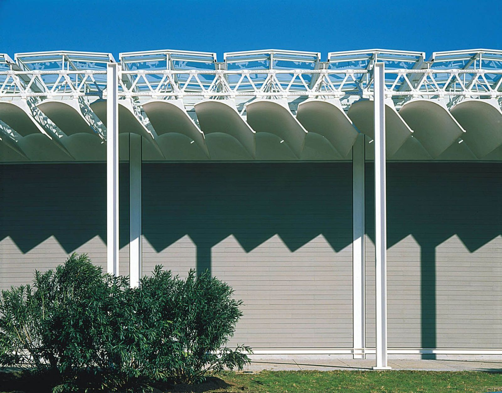
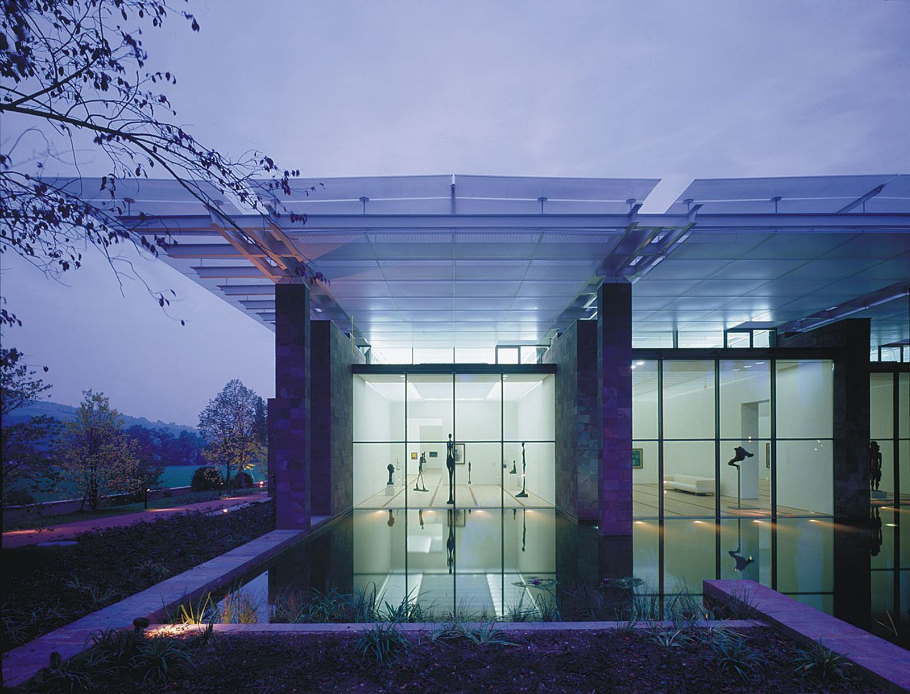
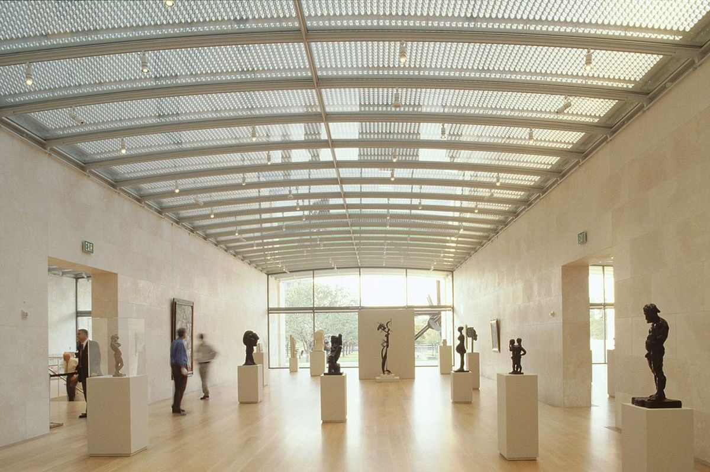

What is on record about daylight and electric light in twenty-four Renzo Piano Building Workshop projects
Kimbell Art Museum, Renzo Piano Pavilion, Fort Worth, at dusk · Image rpbw.com
01
About this page
"Light must be modulated, filtered, and controlled, always in service of the people who inhabit our buildings."
The page collects what is on record about light in Renzo Piano Building Workshop (RPBW) projects: the roof and facade assemblies, the lighting and daylighting consultants, the light levels and control systems that have been published, and what critics wrote about the light. It is organized by building.
A lighting designer is named only where a source names one. Where no source does, the page says so.
Piano was born in Genoa in 1937 into a family of builders. He graduated from the Politecnico di Milano in 1964. From 1965 to 1970 he worked in the offices of Louis Kahn in Philadelphia and Z. S. Makowsky in London.
The Pritzker biography quotes Piano: "Knowing how to do things not just with the head, but with the hands as well: this might seem a programmatic and ideological goal. It is not." He won the Pritzker Prize in 1998.
Seven projects in date order. The chart places them, and every other project on the page with rpbw.com status years, on one timeline.
rpbw.com status years
01
Houston · 1982–1987
The Menil Collection
A roof of ferrocement "leaves" that filters daylight

The leaves over the perimeter walkway, against the grey cypress cladding.rpbw.com
Dominique de Menil, rpbw.com says, "emphasized the importance of viewing art under daylight, appreciating its dynamic changes throughout the day and across seasons."
The roof's inner layer is a curved ferrocement element, the "leaf": 130 × 90 cm in cross-section and 25 mm thick, carried on a ductile iron truss. rpbw.com counts 291 of them; the Fondazione Renzo Piano and the AIA 25 Year Award citation say 300. A Fondazione caption describes the leaves as elements "which filter the sunlight and reduce the interior light levels".
To design them, the office and Ove Arup & Partners built what Piano called, "a bit pompously, 'the solar machine'", which "would allow us in Genoa to find out the position of the sun in Houston". He adds: "We also built one-to-ten scale models, which we put in the garden to study the diffusion of light." The Fondazione archive also holds photographs of a full-size (1:1) mock-up gallery.
The main terminal roof is an undulating, asymmetric section made of arcs of different radii, carried on 80 m three-dimensional beams. Its shape came from structural and ventilation studies with Peter Rice and Tom Barker of Ove Arup & Partners, and lets air flow from the rear of the building toward the runway side without suspended ducts.
rpbw.com: "Beneath the roof, blade-like deflectors serve a dual purpose: they guide the airflow while reflecting natural light from the skylights above."
A layered glass roof with the electric light inside it

The museum at dusk, across the pond.rpbw.com
rpbw.com: "Beyeler wanted the art to be lit entirely by natural light." Four parallel walls, 127 m long and 4.8 m high, clad in red porphyry, carry a glass roof that rpbw.com calls "a machine for zenithal light". Its layers "softly filter 50% of direct sunlight"; rpbw.com does not say which layer or quantity the figure refers to.
From the top down, as rpbw.com describes it: slanted, screen-printed tempered glass plates over steel box beams; insulating laminated safety glass; an air chamber closed by a second layer of glass 1.4 m below. "The air chamber houses adjustable slats that control the entry of direct light and artificial lighting systems that supplement illumination during low-light conditions." Below that, a velum of perforated plates stretches "a layer of white fabric to ensure uniform light dispersion throughout the interior."
A 52-story tower with a double facade: 175,000 off-white ceramic rods, set horizontally on a thin steel frame, in front of highly transparent glass. rpbw.com says the rods "shift in color with changing city light and weather conditions" and block up to 50% of the sun's rays. The screen extends 27 m above the building's top, with the rods spaced more widely toward the top.
"At a distance, except under certain angles of sunlight, those ceramic rods don't look like white, shimmering veils as much as delicate gray washboards."
Office for Visual Interaction (OVI) lit the base building and the exterior; Susan Brady Lighting Design Studio, with Gensler, lit the Times's own floors (Architect, 2009). In the ERCO Lichtbericht article OVI hosts, the exterior uses ERCO projectors with 250 W metal halide lamps at 3000K, "to complement the building's signature off-white ceramic screens", aimed with lasers "to achieve the desired uniform brightness progression of 1:3 between base and pinnacle". The source does not say whether the ratio is luminance or illuminance. OVI's text on Architonic says the facades are brightest at the base: "bright illumination at the base of the East and West façades fades to a soft glow at the upper tip". OVI's text also says the exterior luminaires sit only at the base and on the podium; an ERCO web page says some are on neighboring buildings. Architizer gives the total exterior lighting load as 42,000 W.
Inside, Architect gives the office lighting power as 1.28 W/ft² (about 13.8 W/m²). World Construction Network reports that the Times tested its offices at 40 footcandles (about 430 lx), judged that too bright, and settled on 30 (about 320 lx); David Thurm of the Times told it that overall "the building uses less than 0.4W/ft² for lighting".
Before construction, Lawrence Berkeley National Laboratory (LBNL) tested automated roller shades and daylight dimming in a 401 m² (4,318 ft²) mockup of the building's southwest corner. Over a nine-month study, equinox to equinox, average lighting energy savings across the 7 m (23 ft) deep dimming zone were 20 to 23% in the sidelit, west-facing area and 52 to 59% in the bilaterally daylit, south-facing area, against a non-daylit reference case (Lee and Selkowitz, 2006). After occupancy, LBNL measured annual lighting energy savings of 56% from occupancy sensing, setpoint tuning and daylight dimming combined, across open-plan perimeter zones up to 40 ft (12 m) deep, against an ASHRAE 90.1-2001 design with scheduled controls only (LBNL, 2013).
The pavilion stands about 65 yards west of Louis Kahn's 1972 Kimbell. Architect magazine says the daylighting system of Kahn's building, developed with Richard Kelly, "has earned its place as one the gold standards in lighting design" [sic].
rpbw.com: "In the galleries, a sophisticated roof system combines stretched fabric, wooden beams, glass, aluminum louvres, and photovoltaic cells to create a controlled, daylit environment. Supplementary lighting, concealed behind scrim fabric, enhances the illumination when needed." Architect magazine describes 29 pairs of laminated Douglas fir beams carrying the glass, a photovoltaic louver system just above the glass, and a scrim below. A third gallery, for light-sensitive works, sits under a green roof.
Arfon Davies led the lighting work in Arup's London office with Giulio Antonutto (Architect). Davies: "We did a thorough assessment of the Kahn building looking at what made the lumen levels, what the distribution of the light was, and what was the luminance distribution on the surfaces of the gallery spaces ... It quickly became apparent that the feeling of light there is much more significant than the actual amount of daylight in the space."
The louvers can be "fully closed or open to any position between zero and 45 degrees" (Architect) and move "at five-degree increments" (The Architect's Newspaper). Davies told Architect that their photovoltaic cells meet "about 70 percent of the lighting energy needs for the building". Arup gave the museum "a table indicating the number of footcandles of daylight a setting will provide at any time of year" (The Architect's Newspaper).
Spotlights with 24 W 3000K LED modules, with the sprinklers and security cameras, "are run on tracks positioned in between the beams to keep the ceiling plane as clean as possible" (Architect); The Architect's Newspaper gives 95 CRI. Custom 10.5 W 3000K uplights "tucked up out of sight above the wood beams" light the glass ceiling at night. Davies: "The intention was to avoid the ceiling becoming a black void at night, and to reveal the volume above the scrim that can be experienced during the day." Lighting power is 1.1 W/ft², about 11.8 W/m² (Architect).
Arup's Andy Sedgwick, on the controls: "We didn't want to sanitize the daylight so much ... If you have a system that is too reactive you can kill that dynamism ..." (The Architect's Newspaper).
Architectural Record: "The only top-lit gallery is on the eighth floor," under saw-tooth skylights; floors five to seven have glass only on their narrow east and west sides. Overhead, "RPBW created a system of gridded ceilings with tracks for lights and others for temporary walls to attach to" (Architectural Record).
The Construction Specifier (2017) describes the eighth-floor monitors as facing north, with "a mixing chamber roughly 2 m (6.5 ft) deep", about half the typical depth, and "tensioned, bottom-up roller shades behind the glazing". Gallery facades have "two layers of motorized shades: one for solar/glare control ... and another for diffusion/light control". A PVB and UV interlayer in the glass filters "more than 99 percent of harmful UV radiation".
Arup's Matt Franks told the Invaluable blog (2016) that Arup designed the gallery track systems and worked with the museum on track spacing and fixture types. The Whitney chose wall-washers for most of its work; Franks: "Instead of having a more theatrical effect, everything is illuminated evenly."
The National Library of Greece and the Greek National Opera, in one building under a sloping park.
rpbw.com: "The entirely glass-walled library reading room sits on top of the building just underneath the canopy roof." The canopy "provides essential shade" and carries 10,000 m² of photovoltaic cells, 1.5 megawatts.
David McAllister, then of Arup (CIBSE Journal, 2017): "Each space had agreed lighting power limits, while all of the architectural light fittings in the building and the park used low-energy LED technology – including some bespoke fittings developed for Renzo Piano by manufacturer iGuzzini." The library skylights have external shades with "blades profiled to cut off direct sun but maximise diffuse daylight penetration". Architectural Record names "'Perroquet' aluminum light fixtures by Renzo Piano Building Workshop (RPBW), which are white at the opera, and gray at the library."
Eight more RPBW museums, 1999 to 2021 (rpbw.com status years). Arup appears in the rpbw.com credits for all eight, in different roles. It is credited for lighting at the High, the Morgan and Harvard; LACMA's fact sheets name Ove Arup, London, as lighting designer.

A gallery under the glass vaults.rpbw.com
Dallas · 1999–2003
Nasher Sculpture Center
Glass barrel vaults carry a cast-aluminum sunscreen of 223,020 die-cast "oculi" (rpbw.com). rpbw.com says the screen "permits only diffused northern light". The team first prototyped the oculi in fiberglass; it failed a summer sun test outside Piano's Genoa office, and they switched to aluminum (Dallas Morning News, 2024). rpbw.com says the screen "creates lighting levels of up to 2,000 lux". Architect (2008) says the Nasher "can utilize a dramatically brighter 100 foot-candles of natural light" (about 1,080 lux), where "a painting gallery at the Art Institute is limited to about 25 foot-candles". In the Nasher's own guide, each glass ceiling panel "is also framed by a light track at four feet intervals".
From 26 September 2011, reflections from the facade of the Museum Tower, then under construction next door, threw "honeycomb patterns on the travertine gallery walls" (Dallas Morning News). As of April 2024 the dispute was unresolved.
Structure and services: Ove Arup & Partners (rpbw.com); Architect credits Arup with the optics of the sunscreen. Lighting: not named on rpbw.com
About 1,000 passive skylights, 800 on the Wieland Pavilion and 200 on the Anne Cox Chambers Wing (Architect magazine; rpbw.com says "nearly 1,000"). Each has three parts: a white aluminum "vela" facing due north, a skylight cut at an angle and glazed in low-iron laminated glass, and a glass-fiber-reinforced gypsum "soffitto" tube that diffuses the light into the room. Electric track, an iGuzzini fixture designed by Piano, runs on two circuits: one daylight-linked, one independent for the art. Architect magazine gives the vela's orientation as "due north 26 degrees off the building's axis". Piano (Archinect, 2006): "It's always a search for north light. The 1,000 skylights at the High Museum are angled because Atlanta is not north-south like Chicago."
Computer analysis and a part-scale model came first. A full-scale mock-up outside Atlanta then "helped uncover" direct sun entering third-floor galleries through a curved transition panel on 21 June between 10:30 and 11:50; a custom frit fixed it. Arup's Arfon Davies: "full-scale mockups are invaluable to understanding the quality and distribution of natural light."
Three steel "hills". The 150 m west front is glass, with fixed and motorized textile shading. rpbw.com gives the light level for the works as 50 to 100 lux; the museum text quoted by CultureGrrl gives a maximum of 80 lux. Lee Rosenbaum (CultureGrrl, 2007) wrote that she had assumed the upper galleries were skylit and found the ceiling "appears opaque"; she reported that curator Michael Baumgartner told her Piano had first hoped for skylights. The museum text she quotes says "the daylight that trickles in through the roof is regulated and dampened".
New pavilions around a glazed central court. In Arup Lighting's 2007 AL Design Awards entry: the court has a custom sunscreen and motorized blinds "connected to a building lighting control system"; in the reading room "the daylight is modulated for book conservation by continually adjusting the motorized louvers above the scrim", with UV-blocking interlayers in two layers of glass and dimmable linear fluorescents with UV sleeves at the shelf tops. "A family of track and pendant-mounted fixtures, designed by Piano, are used throughout the project, providing visual continuity." Lighting power: 0.9 W/ft².
Both have saw-tooth roofs facing north. LACMA's BCAM fact sheet describes "naturally lit galleries" on the third floor, where "the roof system captures northern light and controls the intensity of that light with automatically activated rollershades". The Resnick fact sheet describes a saw-tooth roof with vertical glazing that floods the gallery with northern light.
A "flying carpet" canopy above the third-floor skylights. Building Design + Construction, quoting Arup's Robert Lang: "At the low end they're open to the north to allow the indirect northern light in. At the east and west ends they have a series of fins attached to them to catch and block southern light." It counts "more than two thousand" blades. Inside, "a finely calibrated dimming system uses photocells to adjust the supplied lighting to fluctuations in daylighting levels according to time of day, season, and weather", and the ceiling and roof have "two layers of glass and two separate shading systems" (BD+C).
Chris Miller, Newcity (2009), on the gallery window screens, which he says the New York Times critic Nicolai Ouroussoff described as giving the galleries "a 'soft, ghostlike quality.' Which is to say, they're dark, and way too dark for sculpture like Charles Ray's 'Hinoki' ..."
Structure and services: Ove Arup & Partners. Lighting: not named on rpbw.com
A glass roof over the restored Calderwood Courtyard and the new Prescott Street wing (Harvard Gazette; rpbw.com). The museum's own article says the outer shades are "protected from the elements by 1,800 glass louvers" and interior shades give further control, except over the courtyard, which "has only the exterior set"; "more than 500 shades have been installed throughout the museums." Conservators operate interior shades from a tablet (Harvard Gazette). The conservation lab sits under the glass roof. Charles Klee of Payette told the Boston Society for Architecture (2022) that the lab roof was mocked up "very early in the schematic design": "There were rainbows all over the ground, because of the triangular profile" of the glass edge; the article says the team then developed a square edge.
Paper conservator Anne Driesse: "Often you can see a lot more with a natural light than any artificial illumination."
Edwin Heathcote, Financial Times, 2014, as quoted in ArchDaily's critical round-up: "Piano is quieter than Le Corbusier, less bombastic, but sometimes architecture demands mass and shadow, darkness as well as light. His architecture here looks flimsy, unsure of itself."
The glass dome covers an open-air terrace over the David Geffen Theater: about 1,500 flat laminated low-iron glass panels on a steel gridshell. Knippers Helbig, the facade engineer, records that "solar control coatings had to be avoided", so roller shades and operable vents were built in. Mimi Zeiger (The Architect's Newspaper) notes the galleries are enclosed rooms, partly "to mitigate light and sound spill from the many screens on view". Zeiger: "Lighting grids, fire sprinkler piping, handrails, window mullions, escalators, are centered and aligned with intense precision."
rpbw.com credits Buro Happold (structure, MEP, lighting) and Fisher Marantz Stone (lighting); Arup for theater and acoustics. Fisher Marantz Stone's page lists "BuroHappold and Fisher Marantz Stone" as lighting consultants and says FMS "developed the lighting design for the entire project and site". The sources found do not say how the lighting scope was split. Available Light designed the exhibit lighting. The project received a 2022 National Lighting Bureau Tesla Awards honorable mention, credited to both firms (NLB).
Three separate halls arranged around an open-air amphitheater that rpbw.com calls "the fourth auditorium". The operator: the Sala Santa Cecilia's suspended ceiling "is made up of 26 cherry wood shells, covering a total area of over 4,000 square metres. The wood also covers the stalls and part of the galleries". A permanent neon installation by Maurizio Nannucci runs along the foyer (turismoroma.it).
An academic auditorium of about 430 seats (rpbw.com) above a glazed, public ground floor. Columbia's fact sheet: "Wood panels on the walls and ceiling are strategically placed to enhance acoustics"; perimeter lighting switches or dims "in response to the changing availability of daylight", and motorized shades "tie into the daylight control system". rpbw.com: fritted glass canopies on the south side protect "the interior spaces from direct sunlight".
Two cubes joined by a footbridge through a glazed entrance hall, seven floors including two below ground. rpbw.com: "The spacious galleries overlook a central void, which gradually narrows from bottom to top"; "a suspended floor in this hall ... allowing light to filter down to the underground levels"; and "Natural light is carefully managed through a significant gap that controls brightness." The University: the reading rooms "receive light from the inclined glass roof that spans over all floors".
Lighting: none listed on the rpbw.com library page. rpbw.com credits Piero Castiglioni for lighting on the surrounding MUSE and Le Albere project; whether his scope included the library is not stated
SNFCC, AthensA fully glazed reading room on top of the building under the photovoltaic canopy, which "provides essential shade" (rpbw.com). Glazing and interior shading specifications: not found. See entry
Morgan Library, New YorkMotorized louvers above a scrim, adjusted continually for book conservation; UV interlayers; dimmable shelf-top fluorescents with UV sleeves; desk task lamps (AL Design Awards 2007). See entry
Citadel campus, Amiensrpbw.com: the barracks' brick arches "will be glazed, transforming the space into library reading rooms bathed in natural zenithal light". Lighting: Cosil. See entry
Glass skins
Maison Hermès at night.rpbw.com
Tokyo · 1998–2006
Maison Hermès
rpbw.com: a facade of "13,000 bespoke, 450mm-square glass blocks", made by Vetroarredo in Florence, hung from the structure on steel arms. "Their stamped textured glass finish means they are translucent rather than transparent." At street level the blocks are clear.
rpbw.com: "By day, the facade is silver and sparkling; by night it glows warm like a lantern." Piano (Area): "The idea of a 'magic lantern' lighting up in Ginza, like the ones traditionally hung at the doors of Japanese houses, soon made its way." No source found describes the fixtures.
A glass cube over a new public square and Underground entrance. rpbw.com: "a permeable double skin façade system that features external shading elements and an integrated automatic shading device". CIBSE Journal: "perforated aluminium venetian blinds located within the cavity"; low-iron glass and ultra-clear interlayers. Architectural Record: tenants "must keep interior space at the edge of the floor plate free from partitioning to ensure the facade is lit in a uniform way."
From inside, after dark: Sanjit Bahra of DesignPlusLight, which lit the interiors of the upper nine floors, told US Lighting Trends that "as night falls, the glass can become a reflecting mirror of the interior. To overcome this, we layered lighting effects to highlight the internal form and structure of each space so that the internal view became the interesting nighttime scene."
rpbw.com: "the virtually invisible façade which allows unobstructed 360-degree views, as well as the extra-long overhangs which protect the interior spaces from direct solar radiation." gb&d reports the lobby insulating glass units are 29 ft tall, with a neutral low-e coating. Arup developed the daylighting scheme and a lighting system with "a fully digital control signal that allows lighting components to 'speak' to one another".
Sixteen buildings, most of them nine-story offices, around a 90 × 120 m urban park. Ground-floor shops have low-iron glazing shaded by cantilevered glass canopies; the park facades have colored sunshades, planters with hanging vines and motorized shades. A shallow water mirror can be drained for events.
Arup's LIT Lighting Design Awards entry for the exterior (titled "OoEli Art Park", a winner in Ambient Lighting) describes "a rare "dark lit" environment and minimalistic lighting approach". Soffits and large concrete walls are lit "to create a floating effect of buildings"; tree uplights and in-ground marker lights mark the pedestrian axes; lighting is reflected in the water features; warm white light gives continuity from the ground-floor interiors to the exterior, with "most lighting integrated within built elements". Because the site is "adjacent to the Xixi Wetlands", "No additional lighting is used on the tower facades facing outwards", and "the ambient glow from the interiors through the glass façades" is counted as a source of light.
The BY ART MATTERS museum occupies Building 1 of the complex (The Art Newspaper, 2021). Arup's LIT entry for it (a winner in Cultural Building Lighting Design / Interior Architectural Illumination): roof "sails" over the skylights "open towards the north" and block direct sun; skylights in central zones that get little daylight are fitted with LED, "with colour temperature fine-tuned to resemble that of daylight entering the space"; linear lights on the beams above the ceiling scrim "reduce visual differences between real skylights and LED skylights". After dark, uplight spills through the skylights onto the sails.
"Exhibition space sun shades JNBY Art Gallery" (rpbw.com caption).rpbw.com
Structure, MEP, facade, lighting and sustainability: Arup
Wallpaper* (2019) and Arup name RPBW as architect; rpbw.com has no project page for it (checked 1 October 2026). Arup's project page: "all classrooms pupils are within 9m of the façade", "all classroom walls are glass", and "Automated solar control blinds have been fitted to prevent overheating and control glare."
Arup's LIT entry (an honorable mention) describes a "lantern concept": vertical surfaces are lit and "remain illuminated after school hours to achieve a glow through the transparent façade after dark". "Classroom lighting scenes are created for a range of learning environments to suit different age groups and furniture configurations."
A campus for the Université de Picardie Jules Verne inside Henri IV's brick citadel. New buildings keep to the 15 m height of the ramparts, around internal gardens, linked by a glazed frame of stairs and footbridges. rpbw.com: the barracks' brick arches "will be glazed, transforming the space into library reading rooms bathed in natural zenithal light".
What the sources above document about how light was designed, tested and controlled on these projects, grouped by topic. Each item links to the entry it comes from.
Roof and gallery sections
Four section drawings from RPBW and the Fondazione archive, each through a daylight roof.
Beyeler"Artificial lighting systems" in the roof's air chamber with the daylight slats, above a white fabric velum (rpbw.com).
Kimbell"Supplementary lighting, concealed behind scrim fabric" (rpbw.com). Track spots, sprinklers and cameras between the beams "to keep the ceiling plane as clean as possible"; 10.5 W uplights above the beams so the ceiling does not become "a black void at night" (Architect).
MenilThe leaf assembly is the "lighting gantry" (Architects' Journal).
HighGallery track on two circuits: one daylight-linked, one independent (Architect).
MorganDimmable shelf-top fluorescents with UV sleeves in the reading room, which has motorized louvers above a scrim (AL Design Awards).
NasherA light track at 4 ft intervals frames each glass ceiling panel (Nasher guide).
WhitneyGridded ceilings with tracks for lights and for temporary walls (Architectural Record).
BY ART MATTERSLED in the skylights of the darker central zones, color temperature tuned to the daylight; linear lights above the scrim to make real and LED skylights read alike (Arup, LIT entry).
Fixtures designed by the architect
HighGallery track is "an iGuzzini fixture designed by Piano" (Architect).
Morgan"A family of track and pendant-mounted fixtures, designed by Piano" (AL Design Awards).
SNFCC"'Perroquet' aluminum light fixtures by Renzo Piano Building Workshop" (Architectural Record) and "some bespoke fittings developed for Renzo Piano by manufacturer iGuzzini" (CIBSE Journal).
Le PerroquetAn iGuzzini product line; iGuzzini's product page credits "Design: Piano Design".
Genoa bridgerpbw.com credits iGuzzini as "Lighting Consultant"; iGuzzini credits the "Lighting Concept" to Renzo Piano. iGuzzini's case study, as reproduced by LightAZ, says the pole-mounted road luminaires were "specifically designed by Renzo Piano himself", and the 28 m "ship masts", 50 m apart, needed "a specially designed optic (type ST1.2) as there was no light fitting in existence that could cover the distance between the poles".
"All the projects that come out of the Building Workshop have stories of similar experiments."
MenilA "solar machine" to set the sun position for Houston, 1:10 models in the garden, a 1:1 mock-up gallery, and a study sheet recording a lux test series.
BeyelerA 1:20 galleries study model (1992) and 1:10 and 1:5 roof study models (Fondazione archive).
HighA full-scale mock-up "helped uncover" direct sun on 21 June, 10:30 to 11:50; fixed with a custom frit.
NasherA fiberglass oculus prototype failed a summer sun test in Genoa; the production oculi are aluminum.
New York TimesA 401 m² daylighting mockup monitored by LBNL for nine months, equinox to equinox, before the shades and dimming were bought.
KimbellArup assessed lumen levels, light distribution and surface luminance in Kahn's galleries first; the museum got a table of daylight footcandles for each louver setting.
HarvardA conservation-lab roof mock-up showed rainbows from the glass edge profile; the edge was changed to square.
Daylight control, and who runs it
KimbellPhotovoltaic louvers set anywhere from 0 to 45° (Architect), in five-degree increments (The Architect's Newspaper). Arup's Andy Sedgwick: "If you have a system that is too reactive you can kill that dynamism".
MorganReading-room louvers above the scrim adjusted continually; court blinds tied to the lighting control system.
Modern WingPhotocell dimming of the electric light against daylight; two layers of glass and two shading systems (BD+C).
WhitneyTwo layers of motorized shades on gallery facades, solar/glare and diffusion; bottom-up roller shades in the eighth-floor monitors (The Construction Specifier).
HarvardInterior shades operated by conservators from a tablet; exterior shades behind 1,800 glass louvers.
LACMA BCAMNorth light limited by "automatically activated rollershades".
Columbia ForumDaylight-responsive switching and dimming at the perimeter; motorized shades tied to the daylight controls.
OōEliNo additional lighting on the outward-facing tower facades, near the Xixi Wetlands; "the ambient glow from the interiors through the glass façades" counted as a source of light (Arup, LIT entry).
Whittle SchoolVertical surfaces lit after school hours "to achieve a glow through the transparent façade after dark" (Arup, LIT entry).
New York TimesFloodlit with 250 W metal halide at 3000K, laser-aimed, brightest at the base and fading toward the top (OVI). OVI places the luminaires at the base and podium; an ERCO page says some are on neighboring buildings.
Maison HermèsTranslucent glass blocks; "by night it glows warm like a lantern" (rpbw.com).
Paddington SquareTenants must keep the floor-plate edge free of partitions "to ensure the facade is lit in a uniform way" (Architectural Record). No published description of the exterior lighting was found.
Numbers on record
Project
Figure
Source
Zentrum Paul Klee
50 to 100 lux for the works; museum text: maximum 80 lux
rpbw.com; CultureGrrl
Menil
Test series on a study sheet: 430 lx = 100%, down to 15 lx = 3.5%
Fondazione archive image
New York Times
Facade: 250 W metal halide, 3000K; "1:3 between base and pinnacle", quantity not stated, brightest at the base; 42,000 W exterior total
OVI / ERCO; Architizer
New York Times
Times offices: 1.28 W/ft² (about 13.8 W/m²)
Architect, 2009
New York Times
Times offices tested at 40 fc (about 430 lx), set at 30 fc (about 320 lx); whole building "less than 0.4W/ft²" in use, per the Times
World Construction Network
New York Times
Mockup, 7 m dimming zone: 20 to 23% (west) and 52 to 59% (south) lighting energy savings against a non-daylit reference. In use: 56% from occupancy, setpoint tuning and daylight dimming combined, perimeter zones up to 40 ft deep, against ASHRAE 90.1-2001 with scheduled controls
LBNL, 2006 and 2013
Nasher
Daylight "up to 2,000 lux" (rpbw.com); "100 foot-candles of natural light", about 1,080 lux (Architect)
rpbw.com; Architect, 2008
Art Institute of Chicago
A painting gallery is "limited to about 25 foot-candles of acceptable light" (about 270 lux)
Architect, 2008
Kimbell
Track spots 24 W 3000K LED, 95 CRI; uplights 10.5 W 3000K; 1.1 W/ft² (about 11.8 W/m²); louvers anywhere from 0 to 45° (Architect), moved in five-degree increments (The Architect's Newspaper); photovoltaics meet about 70% of lighting energy
Architect, 2014; The Architect's Newspaper, 2014
Morgan
Lighting power 0.9 W/ft² (about 9.7 W/m²)
AL Design Awards 2007
Lighting awards on record
Project
Award
Source
High Museum
IALD Award of Excellence, 2006, Arup Lighting (UK)
Wikipedia list of IALD winners (IALD page not seen)
Morgan Library
AL Design Award, 2007, Arup Lighting
Architect, AL Design Awards
New York Times
IALD Award of Merit, 2009, facade lighting, Office for Visual Interaction
AIA New York, 2009
Centro Botín, Santander
IALD Award of Merit, 2019, artec3 Studio (rpbw.com credits "artec3 Studio, Arup (lighting)")
rpbw.com; Luis Vidal + Architects
Academy Museum
NLB Tesla Awards, 2022, honorable mention, Buro Happold and Fisher Marantz Stone; Available Light lists a 2022 IES Award of Excellence for the exhibit lighting
rpbw.com says RPBW "is led by 9 partners" and "permanently employs around 130 people". The offices are in Paris and Genoa. Harvard Business Review, in 2025: "Now in his late eighties, he still works full time."
Buro Happold's history with the office: Ted Happold, who founded Buro Happold in 1976, was on the 1971 Pompidou competition team while at Arup (Centre Pompidou). rpbw.com credits Buro Happold for structure, MEP and lighting on the Academy Museum of Motion Pictures (2021), for structure on Columbia's Manhattanville campus plan, for structure and services on the Isabella Stewart Gardner Museum expansion in Boston (lit by Arup), and as facade consultant on The News Building in London.
Lighting and daylight consultants named on this page
Firm
Projects
Arup
Kimbell, Whitney, SNFCC (with LDK), OōEli, Harvard, High, Morgan, Krause; LACMA (fact sheets); natural lighting at the Beyeler; Whittle School, Shenzhen (LIT entry); Centro Botín (with artec3 Studio)
Office for Visual Interaction
New York Times Building (base building, exterior)
Susan Brady Lighting Design Studio
New York Times Building (Times floors, with Gensler)
Cosil / Cosil Peutz
Citadel campus, Amiens; Paris Courthouse
CPLD
Paddington Square
Tillotson Design Associates
The Forum, Columbia
Ph. Almon
Maison Hermès
Buro Happold; Fisher Marantz Stone
Academy Museum
Available Light
Academy Museum (exhibit lighting)
artec3 Studio
Centro Botín (with Arup)
Piero Castiglioni
MUSE and Le Albere, Trento; Centre Pompidou refurbishment 1996–2000, with R. Jeol
Elektrizitäts AG Basel
Beyeler (electrical, advice on lighting)
From the consultant credits on each rpbw.com project page, plus the Fondation Beyeler and LACMA fact sheets, Arup's pages, the LIT entries and Available Light. Paris Courthouse on rpbw.com.
09
Questions for the first concept meeting
Who is the partner in charge and the project architect, and how does Renzo Piano review the design?
Which past RPBW project is the closest reference, and what would the team change about its lighting?
Which elements modulate daylight, and which of them move? How are they controlled, and what happens when the building is closed?
Is there a separate daylight consultant? Who owns the daylight model?
What light levels and annual exposure limits apply to each type of collection or space?
What is the structural and ceiling module, and where may fixtures, drivers and sensors physically sit?
Will the team accept custom or modified fixtures to match joints and finishes?
What color temperature should electric light have against daylight at dusk?
Which spaces and elements should stay dark at night, and which should be visible from outside?
How far into the landscape and public ground does lighting responsibility go, and what are the dark-sky and neighbor limits?
Which Chinese standards govern, for example GB/T 50034-2024 for building lighting, GB 50033-2013 for daylighting and JGJ/T 163-2008 for urban night lighting?
What full-size mock-ups are planned, and can lighting be tested in them under real daylight?
Who runs shades and controls after handover, and what commissioning is in scope?
Renzo Piano, Archinect interview at the High Museum opening, 2006
"And then there's what I call a Magritte moment. When daylight goes and you start turning on the lights. Light makes the room alive."
10
Sources and notes
Sources are linked in each entry. This list collects the main ones.
How this page was checked. The text went through three rounds of independent review (30 September and 1 October 2026) in which reviewers opened the cited sources and checked quotations, figures and credits against them; corrections from every round are applied. Where the sources found disagree, both figures are given. Press round-ups (ArchDaily), blogs (CultureGrrl, Invaluable), manufacturer pages (iGuzzini) and lighting designers' own award entries (LIT) are named as such where used. Project years are the "Status" dates on rpbw.com.
Photographs and drawings are from rpbw.com and the Fondazione Renzo Piano archive, credited beside each image where the source names a photographer or office. They are reproduced for internal study only.